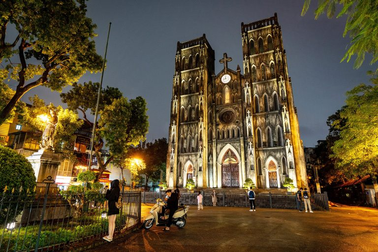
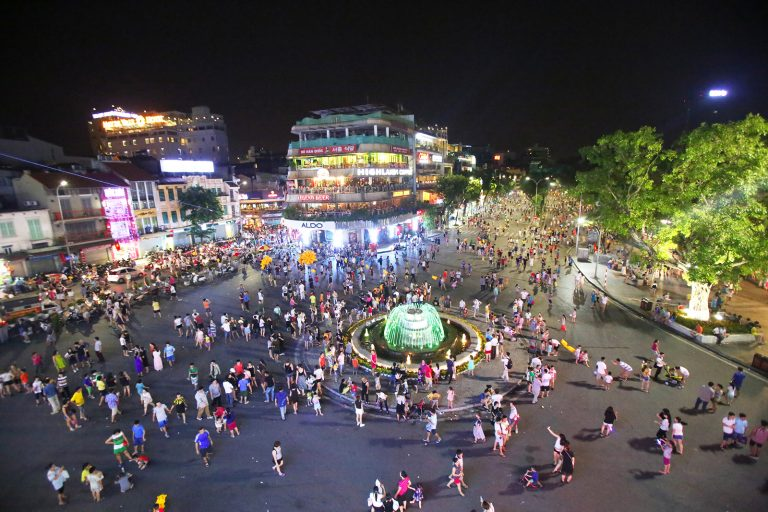
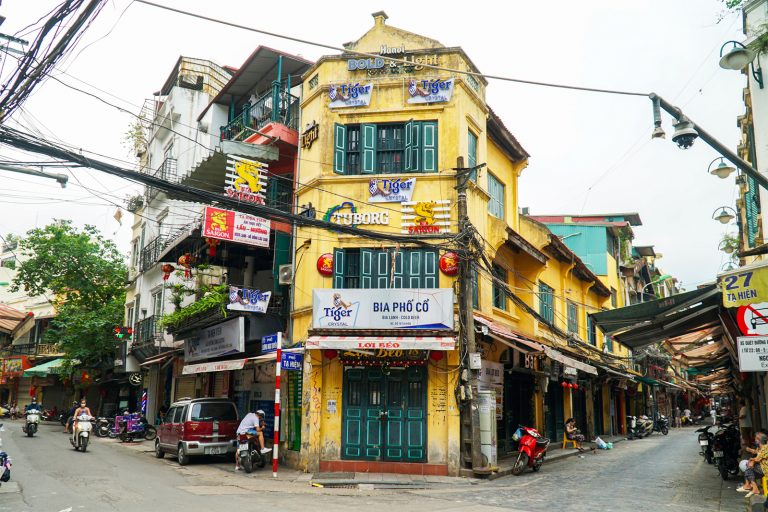
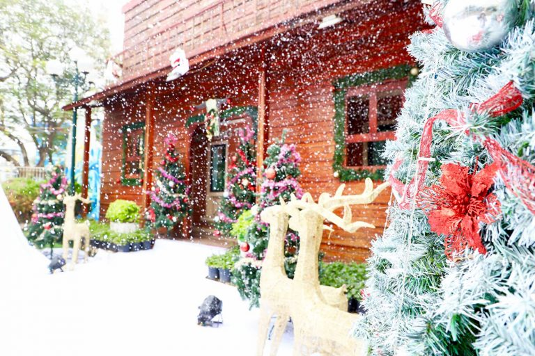
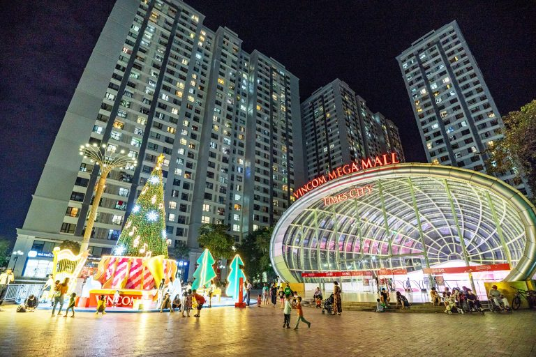
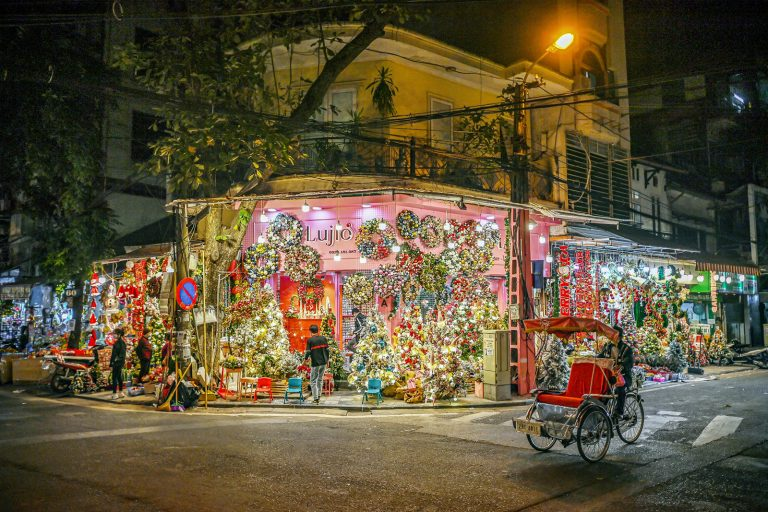
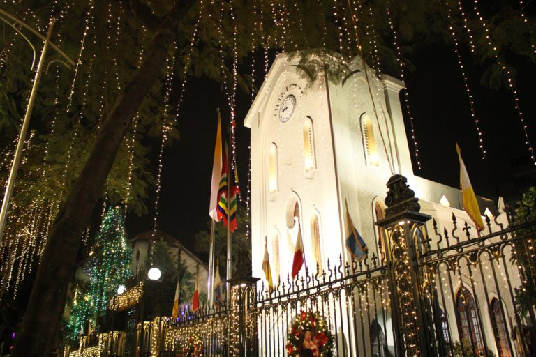
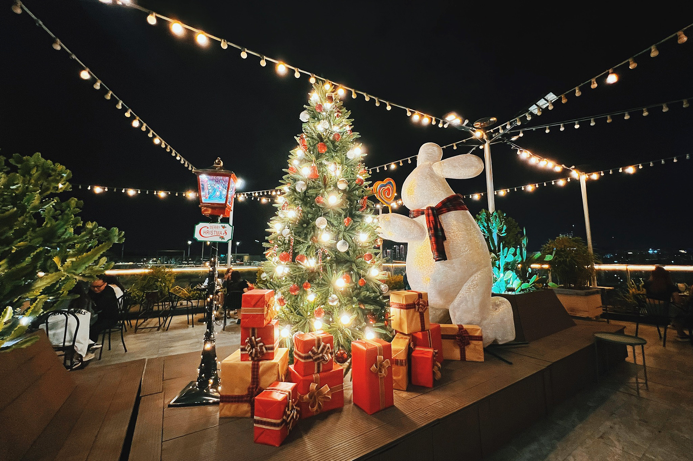
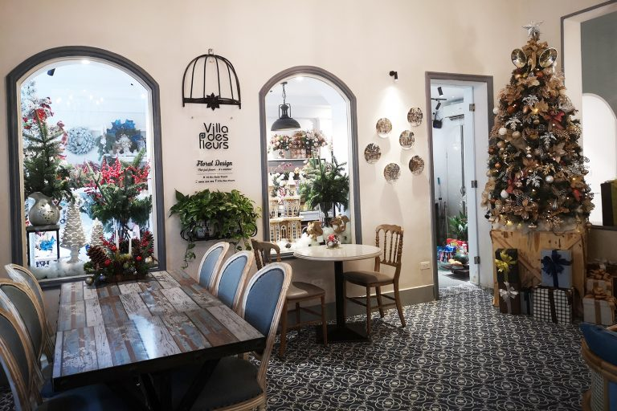
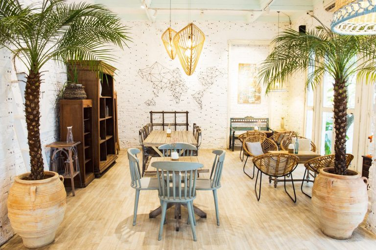

Mùa Noel ở Hà Nội lúc nào cũng náo nhiệt, vì khi nhiệt độ xuống thấp thì mọi người sẽ cảm nhận rõ hơn tinh thần Giáng Sinh. Do vậy, các địa điểm vui chơi hay các nhà hàng, quán cafe ở thủ đô thường được trang trí rất lộng lẫy. Cùng Go2Joy khám phá 10 địa điểm đi chơi Noel ở Hà Nội đón trọn không khí mát lạnh mùa Giáng Sinh nhé.
Giáng sinh là một dịp lễ lớn của đạo Thiên Chúa nên các nhà thờ thường trang trí rất lộng lẫy, cầu kỳ và Nhà thờ Lớn cũng không ngoại lệ. Nhà thờ này được xem là biểu tượng của thủ đô nên càng được đầu tư kỹ lưỡng. Mỗi mùa Noel, nhà thờ đều chuẩn bị một cây thông lớn cùng nhiều mô hình gắn thêm đèn neon lung linh.
Sau khi những tiểu cảnh tranh trí được hoàn thành thì không gian xung quanh trở nên nhộn nhịp, tấp nập hơn cả. Nhiều người dân lẫn du khách sẽ đến đây tham quan và chụp ảnh. Vào đêm ngày 24, nhà thờ cũng tổ chức nhiều hoạt động như hát Thánh ca, đọc kinh cầu nguyện, biểu diễn văn nghệ,… để phục vụ người theo đạo và cả quan khách
Phố đi bộ Hồ Gươm là địa điểm tụ họp đã quá quen thuộc với các bạn trẻ, nên vào dịp Giáng Sinh thì nơi này sẽ càng đông đúc hơn. Các hàng quán ở hai bên phố cũng sẽ trang trí lộng lẫy hơn vào dịp lễ hội này, nên khi đi dạo ở đây, bạn sẽ thấy tràn ngập không khí Noel.
Vào cuối tuần hoặc các buổi tối, con phố tấp nập người đến dạo chơi. Bạn cũng sẽ dễ dàng bắt gặp các nhóm nhảy đường phố đang tập luyện hoặc quay video. Khu vực xung quanh phố đi bộ Hồ Gươm cũng có rất nhiều hàng quán bán những món truyền thống của Hà Nội để bạn thưởng thức. Một số địa điểm check-in đẹp mà bạn có thể lựa chọn là: cổng bưu điện VNPT, phố Tràng Tiền, tòa nhà Hàm cá mập.
Phố Tạ Hiện là một trong những địa điểm vui chơi về đêm cực hot ở Hà Nội, được xem là nơi giao thoa giữa văn hóa Á – Âu và sự kết hợp hài hòa giữa sự cổ kính và hiện đại. Tọa lạc trong khu phố cổ nên các hàng ở đây vẫn giữ được nét kiến trúc cổ điển. Khi kết hợp với không khí sôi động, náo nhiệt đã mang đến chất riêng cho khu phố này.
Phố Tạ Hiện có rất nhiều quán nhậu, quán bar với âm nhạc xập xình nên khi đặt chân đến đây, bạn sẽ có được cái nhìn rất khác về khu phố cổ Hà Nội. Mỗi mùa Giáng sinh, hàng quán ở đây sẽ trang trí đơn giản và bật những bản nhạc phù hợp để hòa chung không khí với mùa lễ hội này.
Công viên Hồ Tây là địa điểm vui chơi lý tưởng dành cho mọi lứa tuổi và phù hợp với tất cả các ngày lễ trong năm. Công viên này được chia làm 2 khu vực là Công viên nước và công viên Mặt Trời Mới. Với tổng diện tích lên đến hơn 8ha, công viên giải trí là địa điểm xả stress cực kỳ thích hợp. Vào mùa lễ hội Giáng sinh, công viên lại càng thu hút du khách bởi phong cách trang trí.
Cả công viên được phủ lên sắc đỏ rực rỡ xem kẽ với màu xanh lá mát mắt tạo. Tọa độ này còn “chịu chi” đến mức có cả máy tạo tuyết nhân tạo, nên những bạn chưa từng thấy tuyết cũng có thể đến đây ngắm. Không chỉ vào dịp Giáng sinh mà vào những ngày cuối tuần công viên Hồ Tây cũng có rất đông du khách đến vui chơi.
Khu đô thị Vinhomes Times City Hà Nội là địa điểm được nhiều người lựa chọn để mừng giáng sinh ở Hà Nội. Nhờ có diện tích lên đến 360.000m2 cùng nhiều khu vực vui chơi: quảng trường nhạc nước, thủy cung Vinpearl Aquarium Times City, Bowling, rạp chiếu phim, và nhiều tiện ích khác nên được rất nhiều bạn lựa chọn đến vui chơi vào dịp Noel và cả những ngày nghỉ.
Vào dịp Giáng Sinh hằng năm, khu đô thị này thường trang trí rất hoành tráng với cây thông cao đến 5m cùng với sân khấu nhạc nước rực rỡ. Ngoài ra, những bối cảnh như: tuần lộc, cây thông, những hộp quà khổng lồ cũng được thiết kế vô cùng bắt mắt và cầu kì.
Phố hàng Mã là địa điểm bán đồ trang trí Giáng Sinh lớn nhất Hà Nội, nên tọa độ này là nơi đầu tiên đón mừng Noel. Tất cả những vật dụng bạn cần để trang trí đều có thể tìm thấy ở đây như: trang phục ông già Noel, cây thông, mô hình tuần lộc, các đồ vật trang trí, dây đèn,… Phố hàng Mã cũng là sự lựa chọn hàng đầu với những bạn muốn đón Giáng Sinh sớm.
Nhà thờ Hàm Long được mệnh danh là một trong những nhà thờ đẹp nhất Hà Nội nhờ vào phong cách thiết kế vừa cổ kính vừa hiện đại. Nhà thờ hoàn thành vào năm 1934, được kiến trúc sư người Việt Doctor Thân chính tay thiết kế và mang nhiều nét đẹp đặc trưng của Công giáo.
Vào dịp lễ Giáng Sinh quan trọng trong năm, nhà thờ này luôn có những tiểu cảnh trang trí cực kỳ đẹp mắt, hoành tráng và sáng rực cả một góc đường.
Đây là địa điểm đón Giáng Sinh cực kỳ lãng mạn ở Hà Nội. Không gian sân thượng được trang trí cầu kỳ với nhiều mô hình khác nhau, nổi bật cả một góc quán. Những dây đèn giăng khắp quán cũng giúp không khí lễ hội lan tỏa ra khắp không gian.
Quán được thiết kế theo phong cách sang trọng, ấm áp khi sử dụng nội thất bằng gỗ kết hợp với các vật dụng trang trí cổ điển. Trill Rooftop Cafe & Bistro cũng được đánh giá cao về chất lượng các món ăn nhờ hương vị thơm ngon và trang trí đẹp mắt
Villa des Fleurs phù hợp với những bạn muốn đón Giáng Sinh trong không gian “chuẩn Châu Âu”. Quán được thiết kế hệt như một căn nhà truyền thống ở Châu Âu nên khi được trang trí Noel thì căn villa này trông không khác gì những ngôi nhà mà bạn đã nhìn thấy trên TV.
Jouri Dessert & Tea Những vậy dụng trang trí như cây thông, cây tầm gửi đều được chăm chút tỉ mỉ để mang lại cảm giác chân thật nhất cho khách hàng. Villa des Fleurs cũng phục vụ những set trà Châu Âu để phục vụ những thực khách “sành ăn” và thích phong cách quý tộc cổ điển
Jouri Dessert & Tea là quán cafe đang khiến giới trẻ “đổ đứ đừ” bởi không gian xinh xắn với những tông màu dịu mắt như trắng, be, xanh kết hợp hài hòa. Tuy quán trang trí Noel không quá cầu kỳ những vẫn toát lên không khí lễ hội.
Quán có cả không gian trong nhà và sân vườn để bạn lựa chọn địa điểm phù hợp. Jouri Dessert & Tea nổi tiếng với những món bánh ngọt có hương vị thơm ngon và những món đồ uống độc đáo.
Với 10 địa điểm đi chơi Noel ở Hà Nội mà BookingHotel đã gợi ý, mong rằng bạn đã chọn được đị điểm phù hợp để vi vu mùa Giáng Sinh này. Nếu bạn không muốn chen chúc trên đường phố ồn ào thì hãy thử đón Giáng Sinh trong khách sạn tình yêu xem.